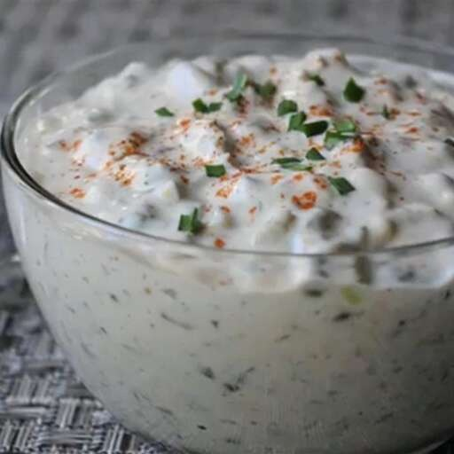

Chef John's Remoulade 2.0

Ingredients
- 1 teaspoon dried tarragon
- 2 tablespoons white wine vinegar
- 1 cup mayonnaise
- 1/4 cup diced dill pickles
- 1/4 cup diced bread-and-butter pickles
- 1 tablespoon chopped capers
- 1 tablespoon minced green onions
- 1 tablespoon chopped fresh parsley
- 2 teaspoons anchovy paste
- 1 teaspoon Dijon mustard
- 1 teaspoon paprika
- 1/4 teaspoon freshly ground black pepper
- 1 pinch cayenne pepper, or more to taste
- salt to taste
Steps
- Crumble tarragon into a saucepan over medium heat; add vinegar, bring to a simmer, and cook until vinegar is almost completely evaporated, 1 to 2 minutes. Remove from heat; transfer to a bowl to cool.
- Whisk mayonnaise, dill pickles, bread-and-butter pickles, capers, green onions, parsley, anchovy paste, Dijon mustard, paprika, black pepper, cayenne pepper, salt, and tarragon mixture together in a bowl. Cover with plastic wrap and refrigerate until flavors blend, 8 hours to overnight.
Home